File: 000510.gt.txt (if the image is defective, simply delete all Arabic text and the line will be excluded)
إليه .
File: 000511.gt.txt (if the image is defective, simply delete all Arabic text and the line will be excluded)
وكان عيصو مشعر الذراع ، فأخذ يعقوب جلد الجديين ، فوضعهما على
File: 000512.gt.txt (if the image is defective, simply delete all Arabic text and the line will be excluded)
ساعديه ، فلما قرب الطعام من أبيه قال : النغمة نغمة يعقوب ، والمسحة مسحة
File: 000513.gt.txt (if the image is defective, simply delete all Arabic text and the line will be excluded)
عيصو . ثم بارك عليه ، ودعا له ، وقال له : كن رأسا على اخوتك .
File: 000514.gt.txt (if the image is defective, simply delete all Arabic text and the line will be excluded)
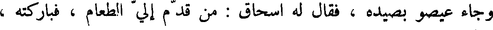
وجاء عيصو بصيده ، فقال له إسحاق : من قدم إلى الطعام ، فباركته ،
File: 000515.gt.txt (if the image is defective, simply delete all Arabic text and the line will be excluded)
ومباركا يكون ؟ قال : خدعني أخي يعقوب ! قال له إسحاق : قد جعلته رأسا
File: 000516.gt.txt (if the image is defective, simply delete all Arabic text and the line will be excluded)
عليك ، وعلى اخوته . ثم دعا له ، وقال : على سمية الأرض تنزل .
File: 000517.gt.txt (if the image is defective, simply delete all Arabic text and the line will be excluded)
وأمر إسحاق يعقوب أن يصير إلى حران ، فيكون عند لابان بن بتوئيل بن
File: 000518.gt.txt (if the image is defective, simply delete all Arabic text and the line will be excluded)
ناحور ، أخي إبراهيم ، وخاف إسحاق عيصو عليه ، وأمره أن لا يتزوج
File: 000519.gt.txt (if the image is defective, simply delete all Arabic text and the line will be excluded)
من نساء الكنعانيين ، فصار حران إلى خاله لابان ، فكانت حياة إسحاق مائة
File: 000520.gt.txt (if the image is defective, simply delete all Arabic text and the line will be excluded)
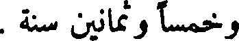
وخمسا وثمانين سنة .
File: 000521.gt.txt (if the image is defective, simply delete all Arabic text and the line will be excluded)
يعقوب بن إسحاق
File: 000522.gt.txt (if the image is defective, simply delete all Arabic text and the line will be excluded)
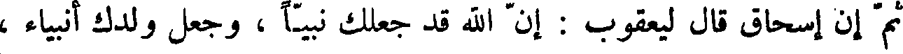
ثم أن إسحاق قال ليعقوب : أن الله جعلك نبيا ، وجعل ولدك أنبياء ،
File: 000523.gt.txt (if the image is defective, simply delete all Arabic text and the line will be excluded)
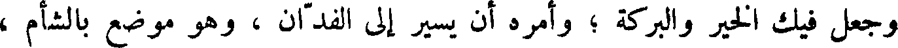
وجعل فيك الخير والبركة ؛ وأمره أن يسير إلى الفدان ، وهو موضع بالشأم ،
File: 000524.gt.txt (if the image is defective, simply delete all Arabic text and the line will be excluded)
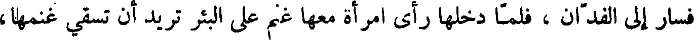
فسار إلى الفدان ، فلما دخلها رأى امرأة معها غنم على البئر تريد أن تسقي غنمها ،
File: 000525.gt.txt (if the image is defective, simply delete all Arabic text and the line will be excluded)
وعلى رأس البئر حجر لا يرفعه إلا عدة رجال ، فسألها : من هي فقالت :
File: 000526.gt.txt (if the image is defective, simply delete all Arabic text and the line will be excluded)
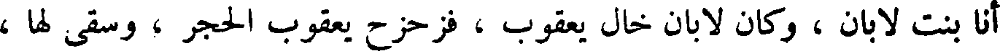
أنا بنت لابان ، وكان لابان خال يعقوب ، فزحزح يعقوب الحجر ، وسقى لها ،
File: 000527.gt.txt (if the image is defective, simply delete all Arabic text and the line will be excluded)
مهلائيل بن قينان
File: 000528.gt.txt (if the image is defective, simply delete all Arabic text and the line will be excluded)
ثم قام بعد قينان مهلائيل بن قينان ، فقام في قومه بطاعة الله تعالى ، واتباع
File: 000529.gt.txt (if the image is defective, simply delete all Arabic text and the line will be excluded)
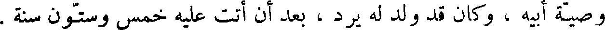
وصية أبيه ، وكان قد ولد له يرد ، بعد أن أتت عليه خمس وستون سنة .
File: 000530.gt.txt (if the image is defective, simply delete all Arabic text and the line will be excluded)
فلما دنا موت مهلائيل أوصى إلى ابنه يرد وأوصاه بجسد أدم ، ثم توفي
File: 000531.gt.txt (if the image is defective, simply delete all Arabic text and the line will be excluded)
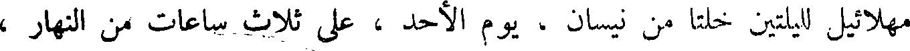
مهلائيل لليلتين خلتا من نيسان ، يوم الأحد ، على ثلاث ساعات من النهار ،
File: 000532.gt.txt (if the image is defective, simply delete all Arabic text and the line will be excluded)
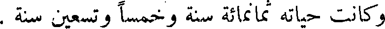
وكانت حياته ثمانمائة سنة وخمسا وتسعين سنة .
File: 000533.gt.txt (if the image is defective, simply delete all Arabic text and the line will be excluded)
يرد بن مهلائيل
File: 000534.gt.txt (if the image is defective, simply delete all Arabic text and the line will be excluded)
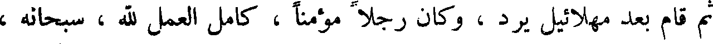
ثم قام بعد مهلائيل يرد ، وكان رجلا مؤمنا ، كامل العمل لله ، سبحانه ،
File: 000535.gt.txt (if the image is defective, simply delete all Arabic text and the line will be excluded)
والعبادة له ، كثير الصلاة بالليل و النهار ، فزاد الله في حياته ، وكان قد ولد له
File: 000536.gt.txt (if the image is defective, simply delete all Arabic text and the line will be excluded)
اخنوخ ، بعد أن أتت عليه اثنتان وستون سنة ، وفي الأربعين ليرد تم الألف
File: 000537.gt.txt (if the image is defective, simply delete all Arabic text and the line will be excluded)
الأول .
File: 000538.gt.txt (if the image is defective, simply delete all Arabic text and the line will be excluded)
ولما مضى من حياة يرد خمسمائة سنة نقض بنو شيث العهود والمواثيق التي
File: 000539.gt.txt (if the image is defective, simply delete all Arabic text and the line will be excluded)
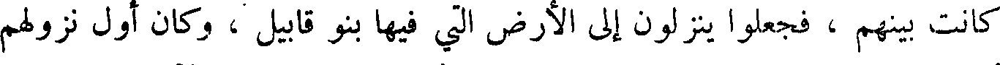
كانت بينهم ، فجعلوا ينزلون إلى الأرض التي فيها بنو قابيل ، وكان أول نزولهم
To Save: `Ctrl+s`, make sure to choose `Webpage, complete`!